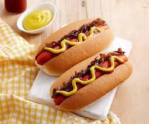

Hotdog

Description
Delicious homemade American style hot dog 100% healthy and learn how to make it in a few easy steps with ingredients within reach of anyone who is a food enthusiast.
Ingredients
- 1/4 cup butter
- 1 sweet onion
- 1 package cream cheese
- 4 hotdogs
- 4 hotdog buns
- Brown mustard
- 1 cup sauerkraut
Steps
- Preheat grill pan for medium-high heat
- Melt butter in a skillet over medium heat. Add onions, and cook slowly until the onions have softened and turned deep brown, about 15 minutes. Warm the cream cheese over low heat in a small skillet until very soft.
- Grill hot dogs until well browned. Lightly grill hot dog buns on both sides.
- To assemble cheese dogs, spread warm cream cheese on toasted hot dog bun, add hot dog or sausage, top with onions, mustard and sauerkraut, if desired.